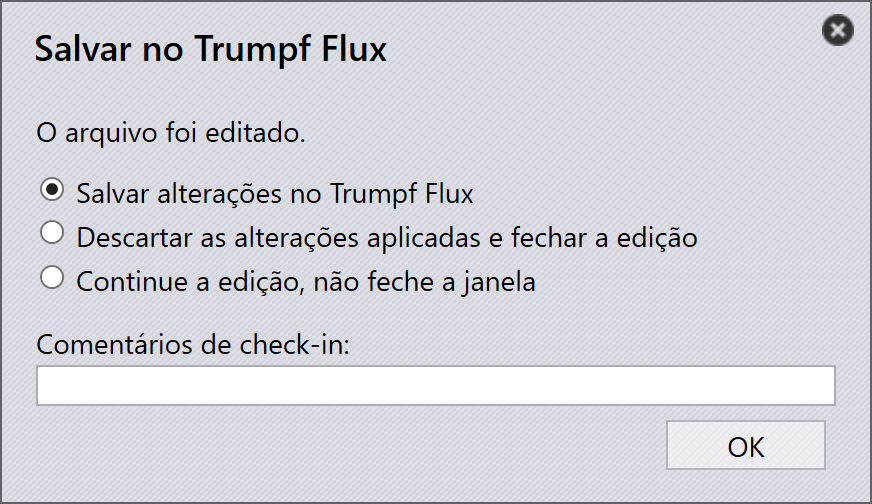
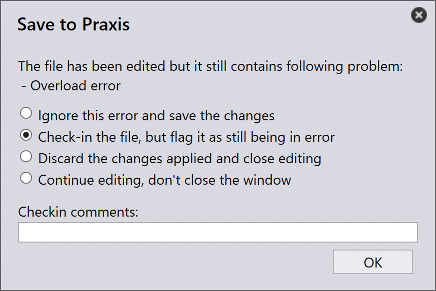
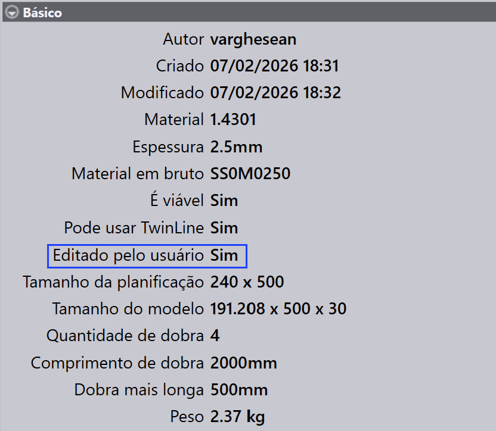
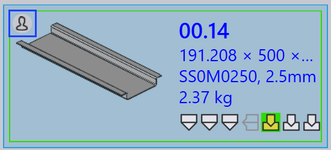

Validação de ferramentas
Esta seção descreve como acessar e modificar as informações de ferramentas para peças no TruSmartCAM.
-
Clique com o botão direito em qualquer bloco de peça para abrir o painel de peça e acessar opções de ferramentas.

-
Clique em Ferramentais para mudar para a primeira instância de ferramentas disponível.
-
Alternativamente, clique diretamente em uma instância de ferramentas para visualizar detalhes da máquina e opções de ferramentas.
-
Use
 para
Abrir em modo somente leitura para visualização.
para
Abrir em modo somente leitura para visualização. -
Use
 para
Fazer check-out do documento para edição.
para
Fazer check-out do documento para edição. -
A instância de ferramentas selecionada abre no TecZone ou MetaCAM.
-
Realize verificações manuais de ferramentas e faça as alterações necessárias.
-
Quando você tentar salvar, um diálogo Unsaved Changes solicita que confirme suas edições.

-
Clique em Yes para prosseguir com o salvamento.
-
O sistema realiza a Validação de Ferramentas novamente após salvar.
-
Se não houver erros, a opção de Salvar alterações no TruSmartCAM aparece.

-
Se erros de ferramentas forem encontrados, uma mensagem de erro é exibida:

-
Após salvar, o status de ferramentas da peça é atualizado na biblioteca de peças.
-
Uma cor verde na instância de ferramentas indica que foi feito check-in.

-
O Autor da Instância de Ferramentas é atualizado para a última pessoa que a editou.
-
O campo Editado pelo usuário indica se a instância de ferramentas foi modificada manualmente. Quando um usuário faz check-out da instância e faz quaisquer alterações, este campo é automaticamente definido como Yes ao salvar.

-
Se uma peça está sendo editada atualmente, um ícone de usuário aparece em seu bloco.

-
Passar o mouse sobre o bloco mostra quem fez o check-out e o horário em que foi feito o check-out.
-
Enquanto a peça está em check-out, a opção
Fazer check-out do documento para edição é desabilitada para a
mesma instância de ferramentas, e a opção  Cancelar check-out se torna habilitada.
Cancelar check-out se torna habilitada.